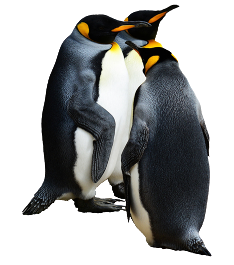

¿Cómo es un pingüino?
Los pingüinos tienen un cuerpo robusto cubierto de plumas densas y resistentes al agua, que les ayuda a mantener su temperatura corporal y flotabilidad mientras nadan. Sus patas cortas y aletas les permiten moverse eficientemente tanto en el agua como en la tierra. Son conocidos por su característico plumaje blanco y negro, aunque algunas especies tienen plumas de colores diferentes.
Los pingüinos suelen vivir en grandes colonias y se comunican mediante sonidos y posturas corporales. Son animales socialmente inteligentes y pueden reconocer a sus compañeros de colonia por sus voces y apariencias únicas. Son principalmente carnívoros y se alimentan de peces, calamares y krill.